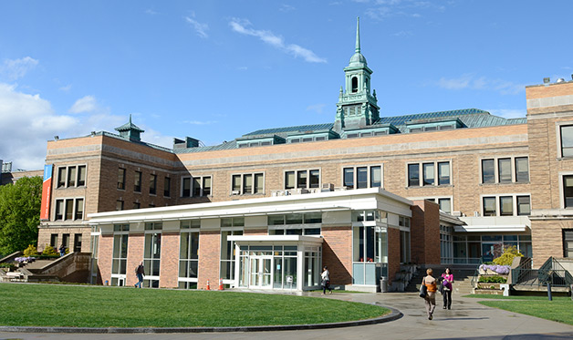

A Brief Overview

Location
Simmons College is located in the Longwood/Fenway area of Boston. From the college, it takes
just 10 minutes to walk to Fenway Park or the MFA and the rest of Boston is just a short
subway or bus ride away.
History
Simmons was founded in 1899 by John Simmons, a businessman who believed that women should
be able to earn a college degree as a means of making a living in a good job and having a
better life. Since the doors of the college first opened, Simmons has offered a top notch
liberal arts education to women from all backgrounds.
Programs
Simmons has a variety of undergraduate degree programs. It is most well known for its nursing
program, which has been ranked
third in the nation.
The school also has over 50 clubs and organizations as well as many different athletic teams.
Want to learn more?
Jump to top
© 2016 Mikaela Scheff